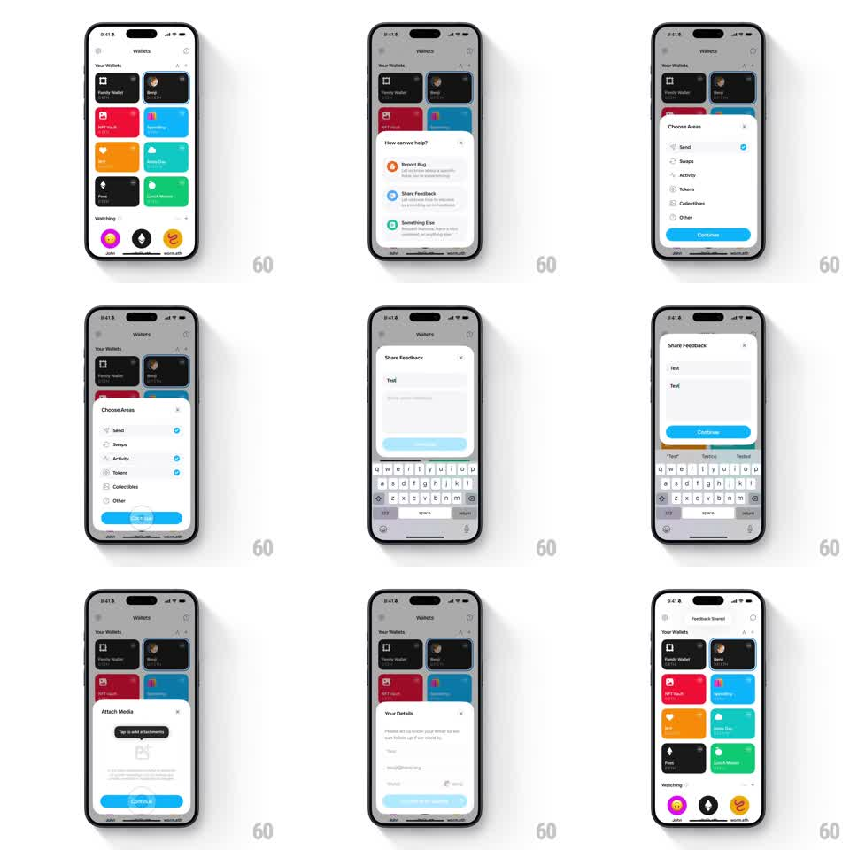

Media
Frame-by-frame

Rebuild this interaction 1:1: Family's share-feedback sheet flow - from the light Wallets grid, a sheet steps from "How can we help?" through "Choose Areas" (Send, Swaps, Activity, Tokens, Collectibles, Other), a "Share Feedback" form with keyboard, "Attach Media", and "Your Details", resizing and crossfading content per step before closing with confirmation.

Rebuild this interaction 1:1: Family's share-feedback sheet flow - from the light Wallets grid, a sheet steps from "How can we help?" through "Choose Areas" (Send, Swaps, Activity, Tokens, Collectibles, Other), a "Share Feedback" form with keyboard, "Attach Media", and "Your Details", resizing and crossfading content per step before closing with confirmation.
## Integration
Integration: stack-agnostic spec - springs given as stiffness/damping, timed motions as duration + curve; map every value to your framework and animation library of choice.
## Scene
Light Wallets screen: "Your Wallets" card grid (Family Wallet, Benji, NFT Vault, Base Dawg, orange card, Vitalik Buterin, Fren, Luke's Wallet), "Watching" row (John, vitalik.eth, Marissa). Sheet steps: "How can we help?" (Report Bug, Share Feedback, Something Else); "Choose Areas" (check rows: Send, Swaps, Activity, Tokens, Collectibles, Other, Continue); "Share Feedback" (title field, body field, Continue, keyboard); "Attach Media" ("Tap to add attachment" pill, placeholder art, Continue); "Your Details" (name/email fields, "Please let us know your email so we can follow up if we need to", Continue).
## Motion spec
Pattern: multi-step sheet morph with form and keyboard states.
- Entry: the sheet rises (spring ~300/20), grid dimming behind (scrim 35%).
- Step changes: content slides up and out (150ms) as the container's height springs to fit (spring ~280/22, 300ms); incoming rows stagger up (50ms apart).
- Check rows toggle with a blue check pop (spring ~340/16, 150ms); Continue enables once a selection exists (light blue -> blue, 200ms).
- The feedback form step grows the sheet with the keyboard in lockstep (250ms); typed text appears per keystroke, field focus shown by a blue caret.
- Final Continue: the sheet slides down (250ms) and a confirmation beat lands on the grid (toast/check fade 300ms).
## Calibration
- One sheet container for the whole flow; only height and content animate.
- Continue is bottom-anchored and blue only when the step is valid.
## Reduced motion
Steps crossfade (200ms); keyboard appears without sync motion.
## Don't miss
- The grid's colorful wallet cards stay recognizable behind the scrim - the flow is lightweight, not modal-black.
- "Attach Media" shows a real "Tap to add attachment" affordance pill.